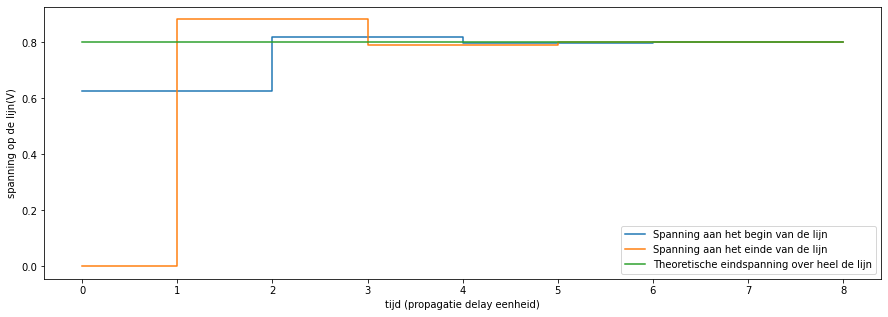
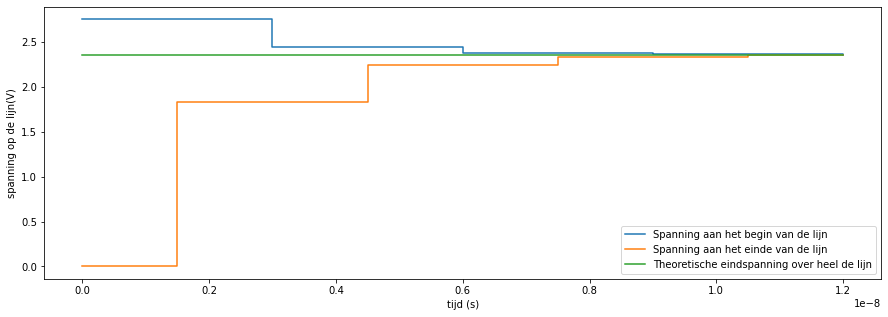

Reflecties
Inhoud
Reflecties¶
Uitwerken van een ladderdiagram¶
import numpy as np
import matplotlib.pyplot as plt
def ladderdiagram (Zo, Zstart,Zend,Tdelay=1,Vpulse=1,numstep=4):
po_s=(Zstart-Zo)/(Zstart+Zo)
po_e=(Zend-Zo)/(Zend+Zo)
V_inf=Vpulse*Zend/(Zend+Zstart)
tijd=[i*Tdelay for i in range(2*numstep+1) for j in range(2)]
runningpulse=Vpulse*Zo/(Zo+Zstart)
vstart=[runningpulse,runningpulse]
veind=[0,0]
for i in range(numstep):
veind+=[veind[-1],veind[-1]+runningpulse*(1+po_e)]
vstart+=[vstart[-1],vstart[-1]]
runningpulse*=po_e
veind+=[veind[-1],veind[-1]]
vstart+=[vstart[-1],vstart[-1]+runningpulse*(1+po_s)]
runningpulse*=po_s
fig,ax=plt.subplots(figsize=(15,5))
ax.plot(tijd,vstart,label="Spanning aan het begin van de lijn")
ax.plot(tijd,veind,label="Spanning aan het einde van de lijn")
ax.plot([0,tijd[-1]],[V_inf,V_inf],label="Theoretische eindspanning over heel de lijn")
ax.set_ylabel('spanning op de lijn(V)');
if Tdelay==1:
ax.set_xlabel('tijd (propagatie delay eenheid)')
else:
ax.set_xlabel("tijd (s)")
plt.legend()
ladderdiagram (50, 30,120)

We kunnen het theoretisch ladderdiagramma ook uitwerken voor een praktische propagatievertraging van 1.5ns en een pulse gestuurd door een IC van met een voedingsspanning op de uitgangsbuffers van 3.3 V. De aan-weerstand van de uitgangsbuffers is 10 Ohm (de aanweerstand van de pMOS) en de terminatieweerstand van de lijn is 25 Ohm. In dat geval verloopt de stijgende puls theoretisch zoals in Fig. 92
ladderdiagram (50, 10,25,Tdelay=1.5e-9,Vpulse=3.3)


Fig. 92 Verloop van een 3.3V positieve puls of een 50 Ohm transmissielijn met een terminatieweerstand van 25 Ohm. De bronweerstand is 10 Ohm.¶